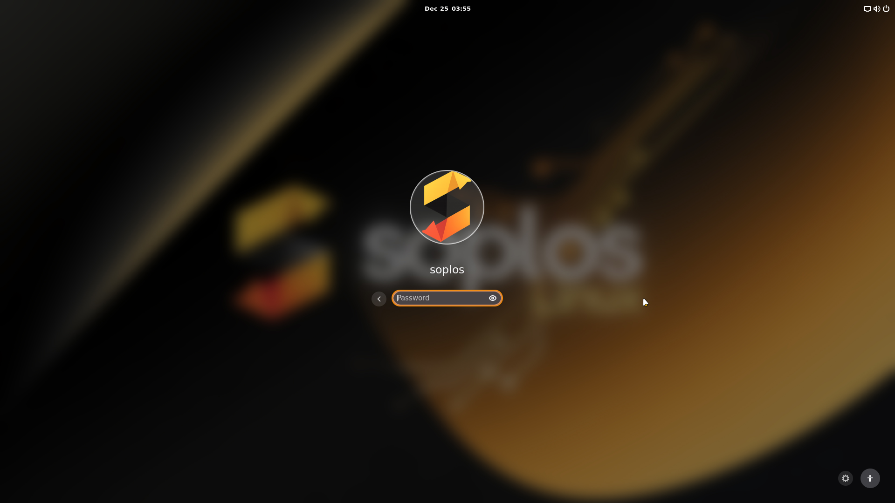
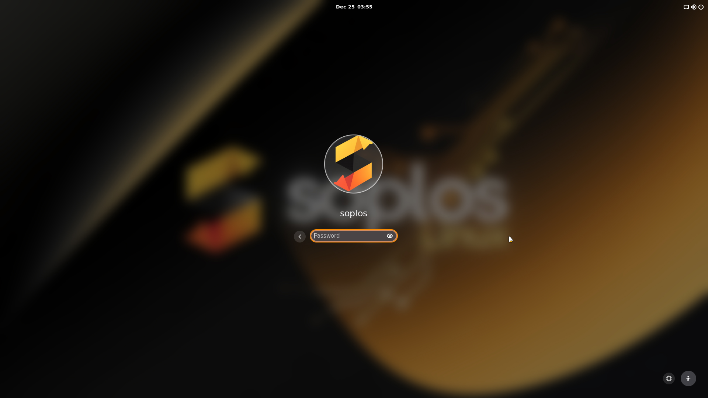

ES
ES FR
FR PT
PT DE
DE IT
IT RO
RO RU
RUOverview
Soplos Boro is the GNOME edition of Soplos Linux, featuring the GNOME 49 desktop environment. Like Tyron and Tyson, it is based on Debian Testing, offering a perfect balance between stability and updated software.
Visually Stunning
Includes an exclusive Soplos Linux customization package and a carefully defined selection of GNOME shells to make it visually attractive out of the box.
Highly Customizable
GNOME's modern design allows extensive customization through extensions and settings.
User Friendly
Familiar interface design that's easy to use for both Linux newcomers and experienced users.
Battery Efficient
Excellent for laptops with longer battery life thanks to optimized power management.
Interface Tour
Desktop Experience
Boro offers a polished GNOME 49 experience enhanced by Soplos Linux:
GNOME 49
The latest version of the GNOME desktop, providing a modern, distraction-free workspace.
Activities Overview
Press the Super key to view open windows, workspaces, and the application grid all in one place. Search for apps, files, and settings instantly.
Files (Nautilus)
The default file manager designed to be simple and elegant, with support for tabs, quick search, and seamless integration with cloud services.
Exclusive Customization
Comes with a specific selection of GNOME shells and themes designed to provide a unique and attractive look and feel, exclusive to Soplos Linux.
Screenshots
Example Boro screenshots from the ISO:
 

Customization
Appearance Settings
Access appearance settings through Settings → Appearance:
Themes
- Pre-installed Soplos themes optimized for GNOME
- Use GNOME Tweaks for easy switching
- Download additional themes from gnome-look.org
- Dark and light variants available
Icons
- Multiple icon sets included
- Consistent Soplos icon theme
- Support for custom icon themes
- Scalable SVG icons for crisp display
Fonts
- Optimized font rendering
- System-wide font configuration
- Subpixel hinting support
- Easy font size adjustment
Wallpapers
- Curated Soplos wallpaper collection
- Custom wallpaper support
- Multiple monitor configurations
Desktop Customization
Boro (GNOME) offers unique customization options:
- Dash to Panel: Combine the dash and top bar into a single panel (like Windows 10/11). Right-click the panel to configure.
- ArcMenu: A powerful and customizable application menu. Right-click the menu icon to choose layouts (Start menu, KRunner style, etc.).
- GNOME Extensions: Use the "Extensions" app to manage pre-installed extensions like Dash to Panel, ArcMenu, and more.
Default Applications
Boro comes with a curated selection of GNOME applications:
Internet
- Firefox: Web Browser
- Transmission: Torrent Client
Office
- LibreOffice: Full Office Suite
- Evince: Document Viewer
Multimedia
- Rhythmbox: Music Player
- Totem: Video Player
System
- GParted: Partition Editor
- GNOME Software: App Store
- Synaptic: Package Manager
Soplos Exclusive Apps
Tools developed by the Soplos team to enhance your experience:
Soplos GRUB Editor
Easily customize your boot menu appearance and settings. Manage entries, fonts, and themes visually.
Soplos Plymouth Manager
Change and preview boot splash themes with a simple click. Customize the startup animation.
Soplos Repo Selector
Select the fastest mirrors for updates and software installation to ensure maximum download speeds.
Soplos Welcome
Your first stop after installation. Install drivers, software, and customize your desktop easily.
Performance Tips
Maximize Boro's performance with these optimization techniques:
Memory Optimization
- Disable animations in GNOME Tweaks
- Reduce startup applications
- Use lightweight alternatives when available
- Close unused applications regularly
Visual Effects
- Disable window animations for speed
- Use static workspaces if possible
- Disable unused extensions
- Choose lightweight themes
Storage Management
- Clean package cache regularly
- Remove unused packages
- Use disk cleanup tools
- Monitor disk usage
System Tuning
- Try performance kernels (Liquorix, XanMod)
- Adjust swappiness for SSD systems
- Configure power management
- Update system regularly
Quick Performance Commands
# Clean package cache
sudo apt autoclean
# Remove unused packages
sudo apt autoremove
# Check system resources
htop
# Check disk usage
df -h
# Monitor memory usage
free -hCommon Issues
Panel disappeared or corrupted
Restart GNOME Shell (Wayland):
# Log out and back in is recommended for Wayland
# Or restart the session
gnome-session-quitDesktop icons not showing
Enable desktop icons in settings:
- Right-click on desktop → Desktop Settings
- Go to Icons tab
- Check "Show desktop icons"
- Configure which icons to display
Slow performance issues
Try these performance fixes:
- Disable animations: GNOME Tweaks → Appearance
- Reduce startup applications: GNOME Tweaks → Startup Applications
- Check system resources with Task Manager
- Clean system:
sudo apt autoremove && sudo apt autoclean - Consider switching to a lightweight theme
Applications not appearing in menu
Refresh the applications menu:
- Right-click on Applications menu
- Select "Edit Applications"
- Or restart the session: Log out and back in
- For manual refresh:
update-desktop-database